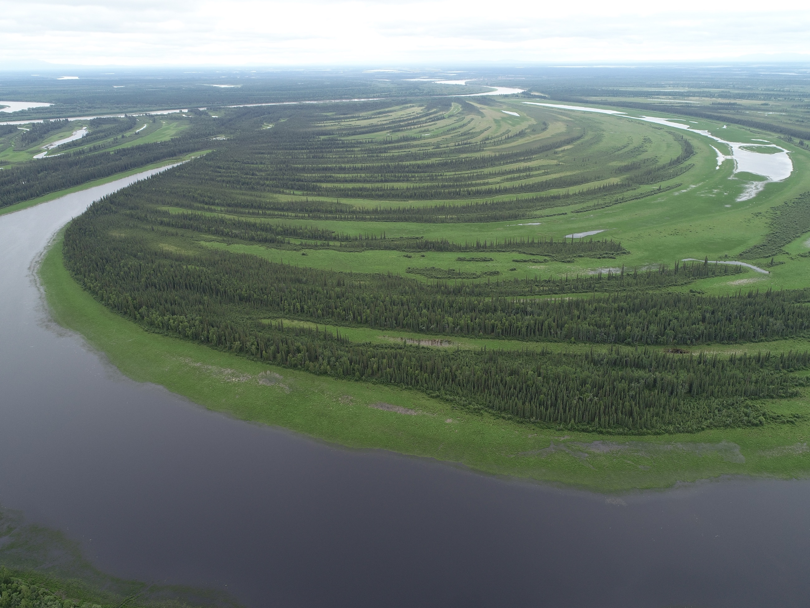
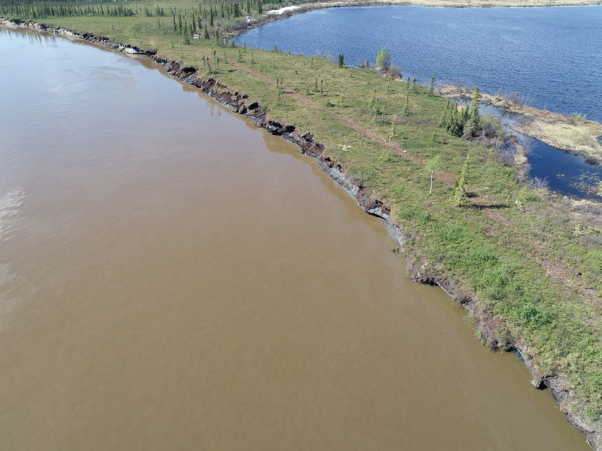
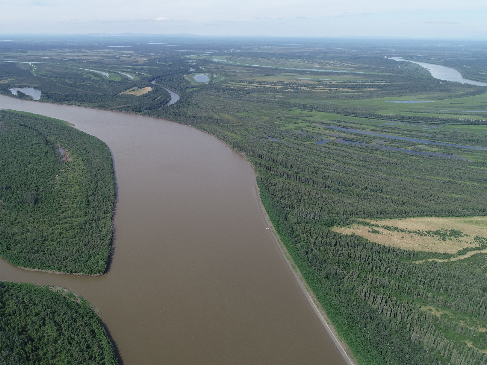
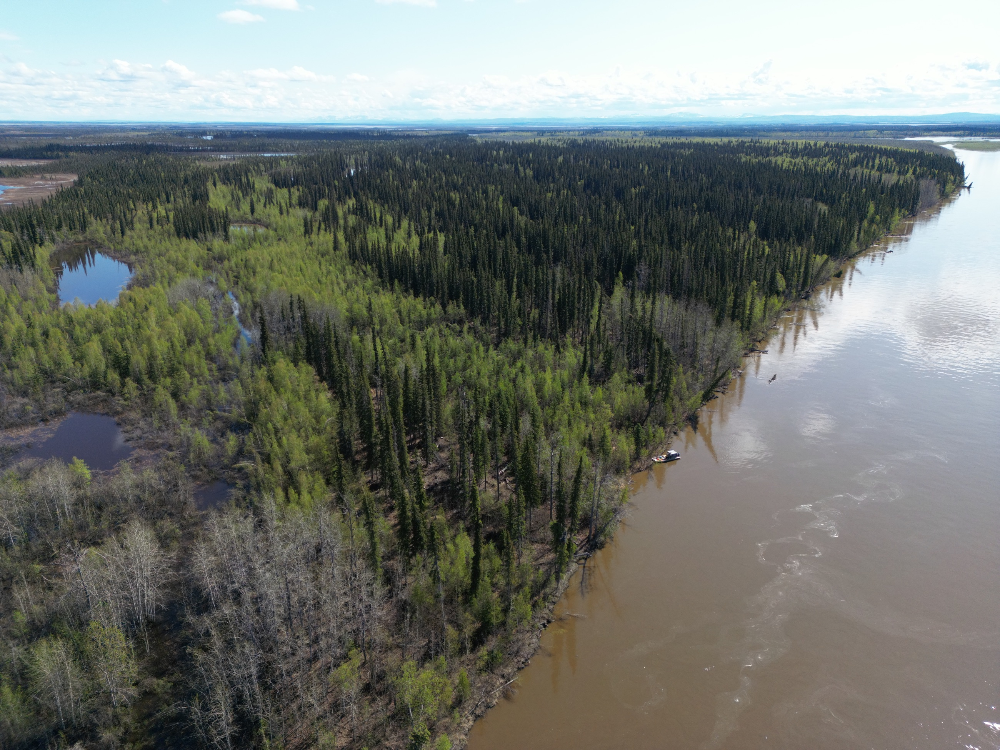
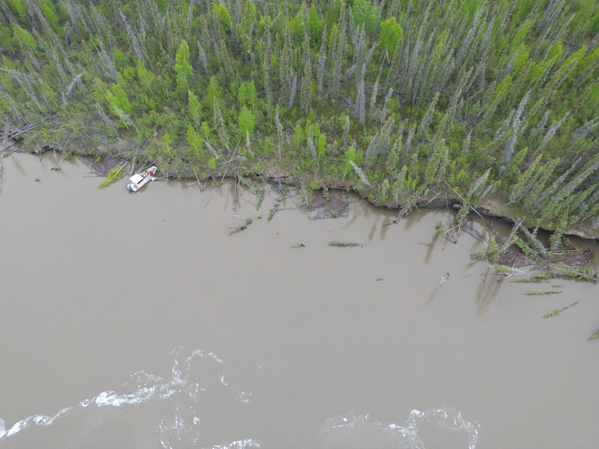
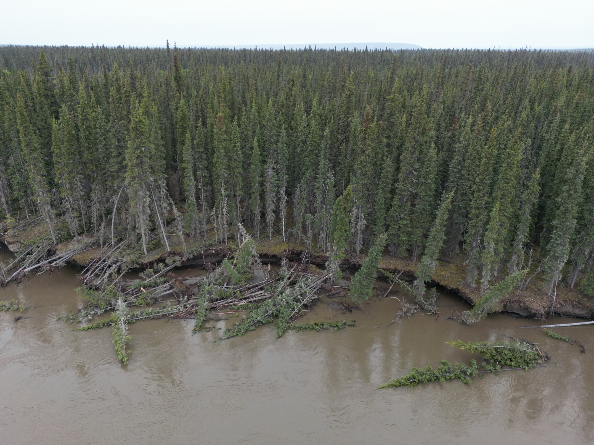
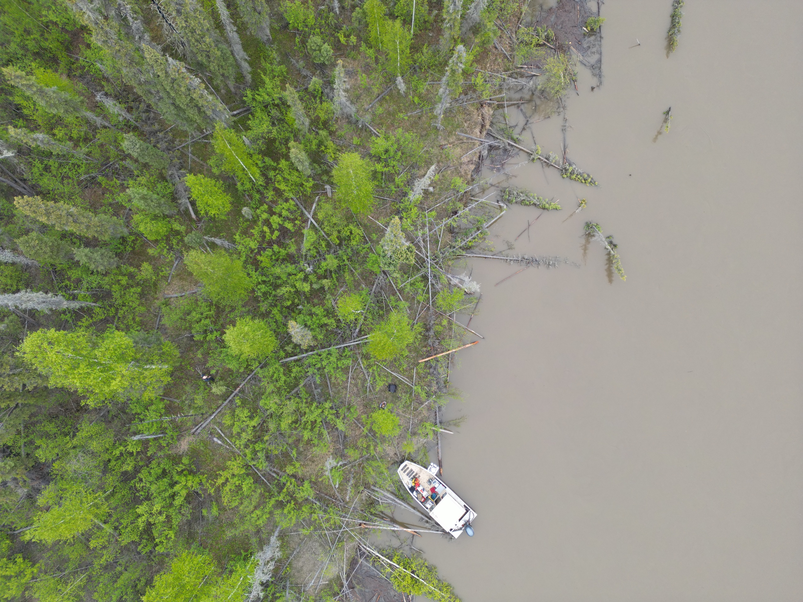
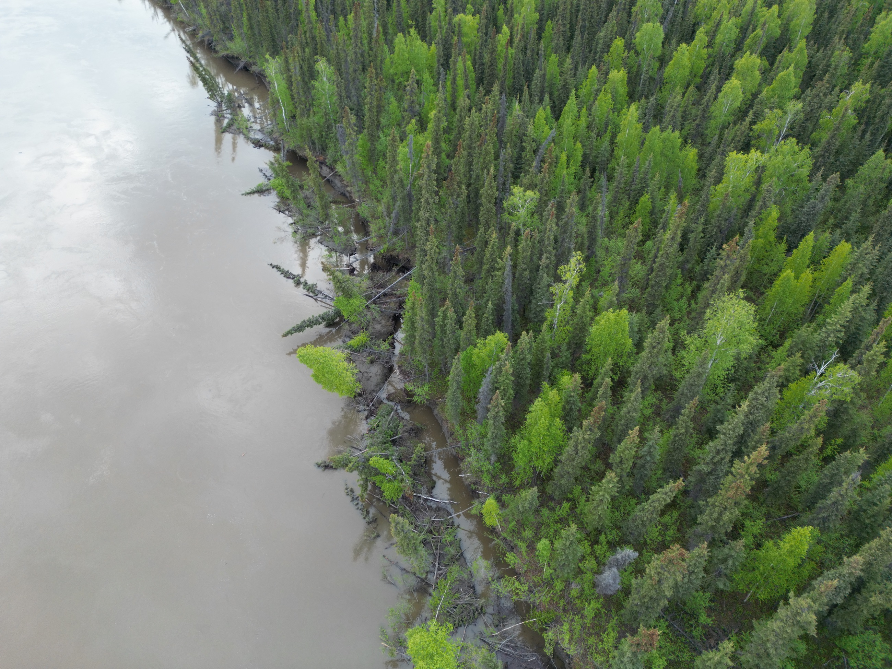
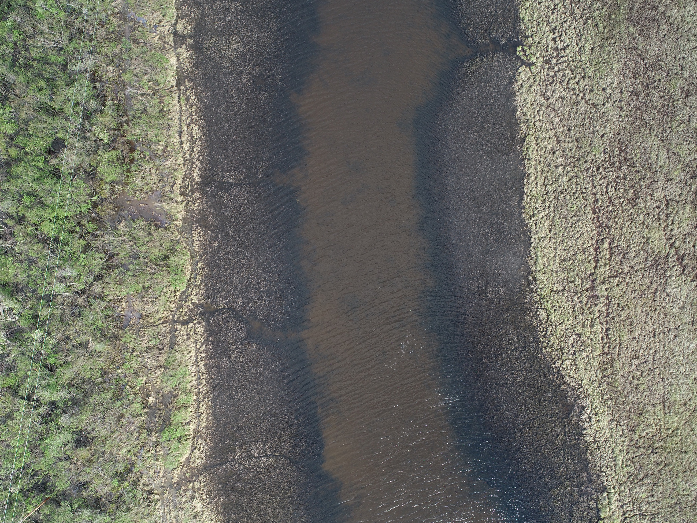

Field atlas / Alaska
Reading river landscapes from above
Selected aerial views of the Koyukuk and Yukon river corridors. Each site is organized around landforms and the questions they raise about sediment and carbon.
Back to field work01 / Huslia, Koyukuk River
A floodplain built by a moving bend

A low, vegetated surface meets the active channel here. It is consistent with point-bar accretion; this frame cannot determine its deposition rate or sediment age.
Curving, tree-covered ridges alternate with grassy swales across the inner bend. They record lateral accretion as the channel migrated. Our floodplain-carbon study pairs such landforms with dating and geochemistry to test storage and persistence.
The watercourse on the outer side of the scroll complex may route flow around recently built surfaces. Its connectivity and exchange with the main channel require repeat imagery or field observations.
This scroll-bar complex links channel migration to the construction of new floodplain ground. Burial can begin during accretion, but residence time and carbon preservation require measurements beyond the photograph.
Huslia town bend / spring 2022
An eroding bank beside a floodplain lake

Exposed sediment and an irregular cutbank show where the channel meets older floodplain material. Continued bank erosion can remobilize sediment and organic carbon; a retreat rate needs repeat surveys. See the floodplain-turnover study.
A lake sits close to the channel behind a narrow strip of floodplain. The photograph does not establish whether the basin formed by thermokarst or an abandoned channel.
The water-filled low between lake and river raises a question about future connection or breaching. It is not evidence of an existing breach. Historical images, elevation data, and field observations are needed to test whether bank erosion or thermokarst-lake drainage occurs here.
The exposed bank is direct evidence of river–floodplain contact. The nearby lake makes capture or drainage a useful research question, not a documented event in this frame.
Huslia / two more views
Floodplain form and reworking
These complete the four-view Huslia set. Open either photograph to see the full frame.


02 / Beaver, Yukon River
Banks, wood, and channel margins
Four views from the spring 2023 archive show the channel edge at different scales, including the big bend and Fish Slough.




03 / Alakanuk, Yukon Delta
A delta channel margin
The supplied Alakanuk folder contains two closely similar overhead images of this reach, so one representative view is shown rather than repeating the same landform.

More distinct Alakanuk views would be needed for a four-image site set.
Aerial images reveal landforms; rates of change, carbon stocks, and subsurface conditions require field measurements and time-series evidence. See the related floodplain carbon study and sediment-storage study.